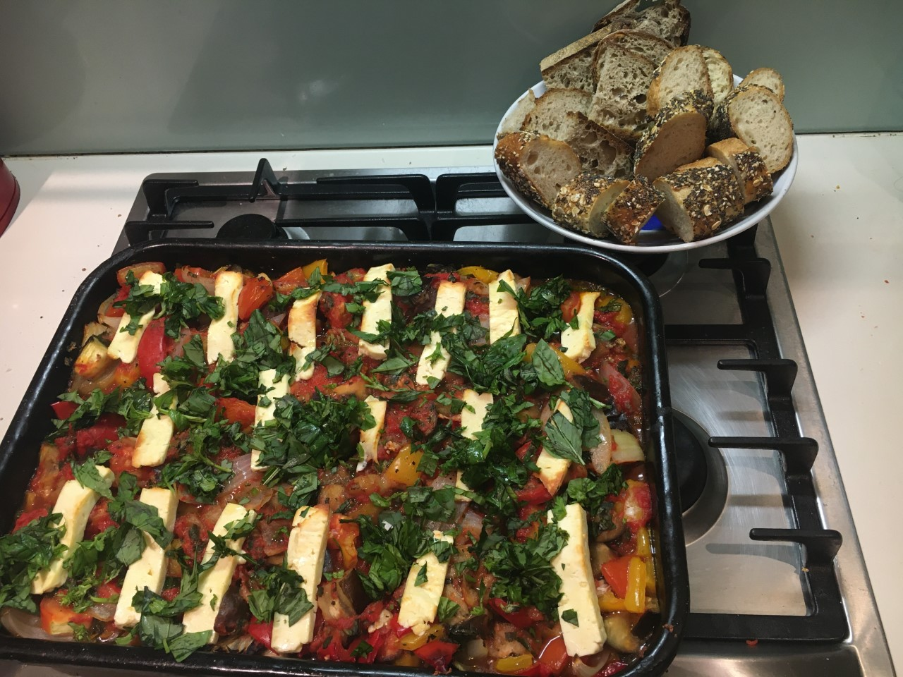

Amanda’s Ratatouille With Halloumi (Vegetarian)

reparation time: 10 mins; Cooking time: 50 minutes
Submitted by: Katrin Meissner
Background
This is a recipe from my lovely friend Amanda. Amanda is actually not such a creative cook but she has a knack for buying the best cookbooks. I copied this one from one of her books during our last visit and we love it. Even the kids love it, they ask for it often. We eat it with fresh bread (sourdough or baguette - but it could be any nice fresh bread you like). It's also good to eat cold. I usually double the recipe for the four of us (we eat a lot!).
Ingredients
- 2 capsicums (1 red and 1 yellow), cut into 2cm chunks
- 1 medium eggplant, cut into 2cm chunks
- 1 medium onion, peeled and cut into 12 wedges
- 3 tablespoons of olive oil
- 2 garlic cloves, peeled and crushed
- 1 handful of fresh basil leaves, sliced
- 2 tomatoes
- 400g can chopped tomatoes
- 250g halloumi cheese, cut into slices
Instructions
- Preheat the oven to 220C.
- Put the capsicums, eggplant, onion in a bowl, add 2 tablespoons of olive oil, salt and pepper and mix it all up. Transfer into a shallow baking dish and bake for 25 minutes.
- Remove the dish from the oven, turn the vegetables, and cook for another 5-10 minutes (until well softened and lightly browned).
- Remove the dish from the oven, add the garlic, basil (leave some out for the end), tomatoes (fresh ones - cut in chunks, plus the can) and mix. Then add the halloumi on top and drizzle with the remaining oil. Season with more pepper (and maybe salt) and return to oven for another 15 minutes (until halloumi is lightly browned).
- Add remaining fresh basil and serve.